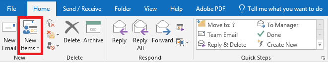
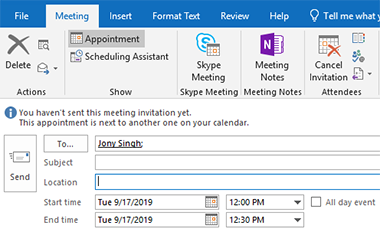
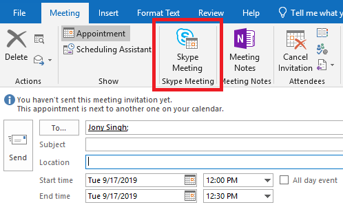
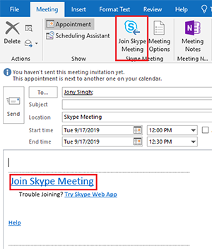
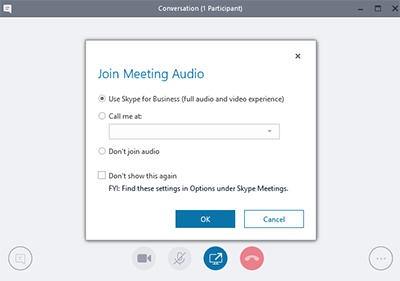

Instructions and Training
Please select the appropriate training section below
- Find the Skype for Business desktop app and open it.

- Once the program is open, input your FAU email address into the Sign-in address field then press Sign in

- Find the Skype for Business desktop app and open it.
- Once the program is open, input your FAU email address into the Sign-in address field then press
Sign in
- You will be logged in after inputting your credientials. To add an out of network user, click the "Add a contact" button under the search bar.

- Once the dropdown menu opens, hover over
Add a Contact Not in My Organization
then click on Skype.
- Type the name or email of the out of network user into the search bar.

- Once the user's skype appears, right click their profile then hover your mouse over
Add to Contacts List
then left clickOther Contatcs.

- Once you press
Other Contacts
a request will be sent to the out of network user. Once they accept that chat request you will be able to conatct the user.
Below is a step-by-step walk through on how to utilize Skype for Business
Using Skype for Business for contacting out of network users
- Find the Skype for Business desktop app and open it.
- Once the program is open, input your FAU email address into the Sign-in address field then press
Sign in.
- Once you are logged into the Skype for Business application, open outlook. In outlook left click
New Items.
 - After you left click
New Items,
a dropdown menu will open. In this menu left clickMeeting.

- After selecting this option a new window will open. In this window input the email address of the out of network user you want to skype with.
Select a meeting time and add a subject (optional).  - After adding the details select
Skype Meeting
in the top bar.  - Once you click
Skype Meeting,
a link will be automatically generated. You can join the meeting now or wait to obtain a notificaiton from outlook later.
Send the email so the out of network user can also be provided with a link to the meeting.  - When you click
Join Skype Meeting
skype for business will open from your windows tray. SelectUse Skype for Business
then press OK. 
Using Skype for Business through outlook for contacting out of network users
- In Microsoft Outlook, navigate to the Outlook Calendar
- Click Home -> New Skype Meeting


- Provide all the relevant information for the meeting, then when all the relevant information has been provided, send the meeting to the invited attendees using the Send button

- Recipients of the invite can join the meeting using their Skype for Business account by clicking on the "Join Skype Meeting" linked in blue (must be signed into Skype for Business). If a recipient does not have Skype for Business, then the meeting can be joined as a guest by clicking "Try Skype Web App" to join the meeting.
Note: Before scheduling a meeting via Skype for Business you must be signed into Skype for Business. If you have not signed into Skype for Business before, please view the first section on this page which explains how to sign into Skype for business
If you don't have the desktop version of Skype for Business, or don't have a Skype for Business account, you can use Skype Meetings App or Skype for Business Web App to join a Skype for Business meeting from your browser. Depending on how your organization is set up, you will use either Skype Meetings App or Skype for Business Web App.
- Open the meeting request in your email or calendar, and select Join Skype Meeting. (Depending on your version, you may see Join Online Meeting.)

- Follow your browser's instructions for installing Skype Meetings App. For example, in Internet Explorer, select Run when you see the alert at the bottom of the browser window.
- On the Skype Meetings App sign-in page, enter your name, and select Join.

- Recipients of the invite can join the meeting using their Skype for Business account by clicking on the "Join Skype Meeting" linked in blue (must be signed into Skype for Business). If a recipient does not have Skype for Business, then the meeting can be joined as a guest by clicking "Try Skype Web App" to join the meeting.

Note: If you don't have the desktop version of Skype for Business, or don't have a Skype for Business account, you can use Skype Meetings App or Skype for Business Web App to join a Skype for Business meeting from your browser. Depending on how your organization is set up, you will use either Skype Meetings App or Skype for Business Web App.
Join a meeting using Skype Meetings App
Here are the basic steps to join a Skype for Business meeting with Skype Meetings App.
Join a meeting using Skype for Business Web App
Here are the basic steps to join a Skype for Business meeting with Skype for Business Web App.
- Open the meeting request in your email or calendar, and select Try Skype Web App.
- On the Skype for Business Web App sign-in page, enter your name, and select Join the meeting.
- Follow your browser's instructions for installing the Skype for Business Web App plug-in, which is required for audio, video, and screen sharing.
- Depending on the meeting options set by the organizer, you'll either join the meeting immediately, or be directed to the virtual lobby.

Note: If you're in the lobby, the meeting organizer and other presenters are immediately notified that you're waiting.
If you require more assistance on Skype or if you have any questions about it, please send an email to jsingh@health.fau.edu.